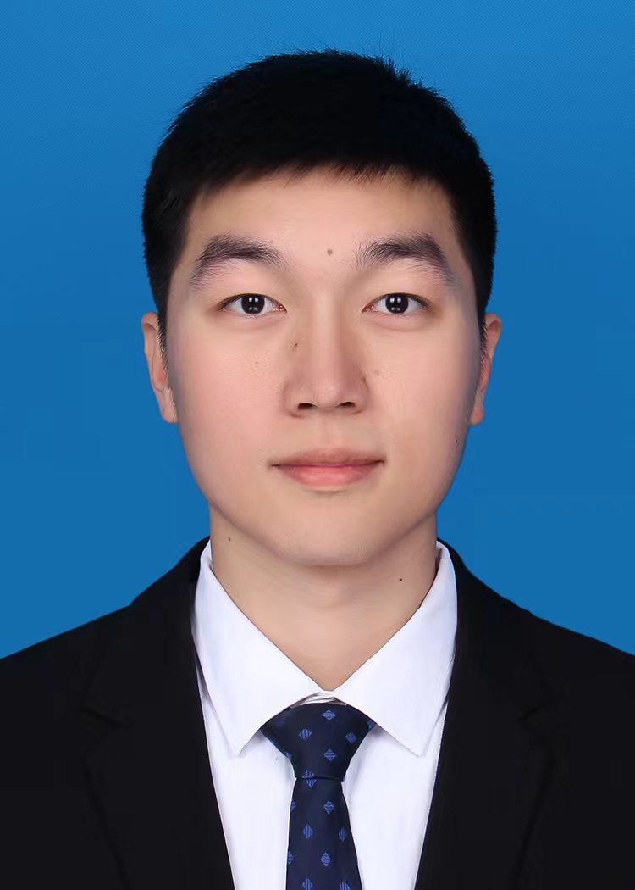
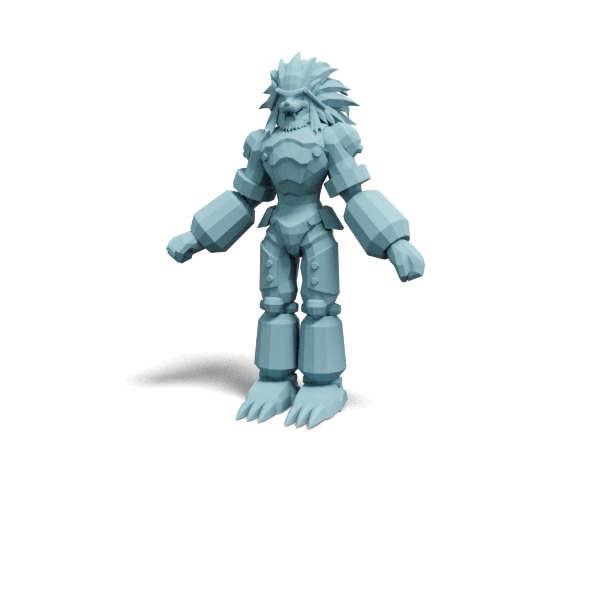

Jian Liu 刘建Phd student Pervasive Intelligence Lab
|
 |
Biography
I am a first-year PhD student in Computer Science and Engineering at the Hong Kong University of Science and Technology (HKUST), supervised by Prof. Song Guo. I received my Bachelor's and Master's degrees in Computer Science and Technology from Harbin Institute of Technology (HIT) in 2022 and 2024, respectively. My research focuses on cutting-edge areas including 3D content generation, auto-regressive models and diffusion models, and reinforcement learning.
Experience
- July.2025 - Now , Qingyun Research Intern, Tencent Hunyuan, working closely with Haohan Weng and Biwen Lei
- Aug.2024 - June.2025 , Research Intern, Tencent Hunyuan, working closely with Haohan Weng
- Sep.2023 - July.2024 , Research Intern, Shanghai AI Lab, supervised by Shixiang Tang and Wanli Ouyang
- May.2022 - Aug.2023 , Research Intern, Megvii Research, supervised by Zhewei Huang
- Aug.2021 - Oct.2021, Software Dev Engineer Intern, Alibaba
Selected Awards
- Outstanding Graduate of Heilongjiang Province, China, 2025
- Outstanding Graduates of Harbin Institute of Technology, 2025
- China National Scholarship, 2024
- Outstanding Intern at Shanghai AI Lab, 2024
- Outstanding Graduates of Harbin Institute of Technology, 2022
- China National Scholarship, 2021
- The First-class Scholarship at Harbin Institute of Technology, 2019&2020&2021
- The First Prize at Mathematics competition of Chinese College Students, 2019
Publications
 |
Mesh-RFT: Enhancing Mesh Generation via Fine-grained Reinforcement Fine-Tuning Jian Liu*, Jing Xu*, Song Guo, Jing Li, Jingfeng Guo, Jiaao Yu, Haohan Weng, Biwen Lei, Xianghui Yang, Zhuo Chen, Fangqi Zhu, Tao Han, Chunchao Guo NeurIPS 2025, Spotlight [PDF] [Github] [Project Page] |
|  | Auto-Connect: Connectivity-Preserving RigFormer with Direct Preference Optimization Jingfeng Guo*, Jian Liu*, Jinnan Chen, Shiwei Mao, Changrong Hu, Puhua Jiang, Junlin Yu, Jing Xu, Qi Liu, LiXin Xu, Zhuo Chen, Chunchao Guo NeurIPS 2025 [PDF] [Github] [Project Page] |
 |
FreeMesh: Boosting Mesh Generation with Coordinates Merging Jian Liu, Haohan Weng, Biwen Lei, Xianghui Yang, Zibo Zhao, Zhuo Chen, Song Guo, Tao Han, Chunchao Guo ICML 2025 [PDF] [Github] [Project Page] |
AFBench: A Large-scale Benchmark for Airfoil Design Jian Liu, Jianyu Wu, Hairun Xie, Guoqing Zhang, Jing Wang, Wei Liu, Wanli Ouyang, Junjun Jiang, Xianming Liu, Shixiang Tang, Miao Zhang NeurIPS 2024 D&B Track [PDF] [Github] [Project Page] |
|
 |
Scaling Mesh Generation via Compressive Tokenization Haohan Weng, Zibo Zhao, Biwen Lei, Xianghui Yang, Jian Liu, Zeqiang Lai, Zhuo Chen, Yuhong Liu, Jie Jiang, Chunchao Guo, Tong Zhang, Shenghua Gao, C. L. Philip Chen CVPR 2025 [PDF] [Github] [Project Page] |
Preprints
 |
A Comprehensive Survey on 3D Content Generation Jian Liu, Xiaoshui Huang, Tianyu Huang, Lu Chen, Yuenan Hou, Shixiang Tang, Ziwei Liu, Wanli Ouyang, Wangmeng Zuo, Junjun Jiang, Xianming Liu Arxiv 2024 [PDF] [Github] |
Technical Reports
 |
Hunyuan3D Studio: End-to-End AI Pipeline for Game-Ready 3D Asset Generation Jian Liu is one of the core contributors of Low-poly Generation [PDF] [Projects Page] |
 |
Hunyuan3D 2.0: Scaling Diffusion Models for High Resolution Textured 3D Assets Generation Jian Liu is one of the core contributors of Low-poly Generation [PDF] [Github] [Projects Page] |
 |
DINO-SD: Champion Solution for ICRA 2024 RoboDepth Challenge Yifan Mao*, Ming Li*, Jian Liu*, Jiayang Liu, Zihan Qin, Cunxi Chu, Jialei Xu, Wenbo Zhao, Junjun Jiang, Xianming Liu ICRA24 RoboDrive Challenge [PDF] [Github] [Talk] |
OccTransformer: Improving BEVFormer for 3D camera-only occupancy prediction Jian Liu, Sipeng Zhang, Chuixin Kong, Wenyuan Zhang, Yuhang Wu, Yikang Ding, Borun Xu, Ruibo Ming, Donglai Wei, Xianming Liu CVPR23 Autonomous Driving Challenge [PDF] [Talk] |
Challenges
1st place at Robust Depth Estimation on RoboDrive Challenge, @ICRA 2024 Jian Liu, Yifan Mao, Ming Li, Zihan Qin, Jiayang Liu, Jialei Xu, Cunxi Chu, Wenbo Zhao, Junjun Jiang, Xianming Liu [Challenge Website] |
|
Innovation Award at 3D occupancy prediction on autonomous driving challenge, @CVPR 2023 Jian Liu, Sipeng Zhang, Chuixin Kong, Wenyuan Zhang, Yuhang Wu, Yikang Ding, Borun Xu, Ruibo Ming, Donglai Wei, Xianming Liu [Challenge Website] |
Service
- Conference Reviewer: NeurIPS, ACM MM, ICME.